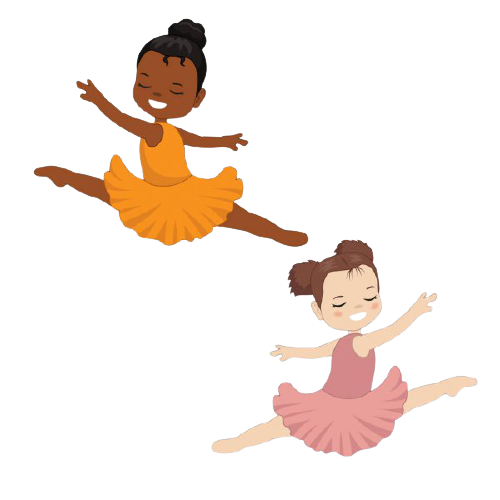

I love reading books as they help me improve my vocabulary. Books are my best friends. Whenever I feel bored, I read books. Reading books broadens my Imagination and enhances my creativity. I love reading fiction, adventure, mystery, non-fiction, myths, science, space, comics, western etc. Books are also very informative. Every book gives me an opportunity to learn new things and explore new ideas. Books impart valuable lessons from years of experiences. A book will always be my best friend.
I also love dancing. Dancing is my passion. I learn two very different genres of dance, house and freestlye. House dance has roots in the underground house music scene of Chicago and New York. It is typically danced to loud and bass-heavy electronic dance music provided by DJs. Freestyle is a way of dancing in which the dancer improvises his/her moves on the spot, as he/she dances, instead of having them planned beforehand (ie choreography). In its most extreme form, it is the very opposite of choreography, however, it can be argued that such an extreme level can never be reached, as we all to some degree plan our moves beforehand. While dancing I/you/he/she can do the gracefully or just go hard. I like to dance gracefully when the song is slow and like to go hard when the song is fast and upbeat. Usually when the music slows down dancers go down on the floor and stand and dance while the song is fast and upbeat.